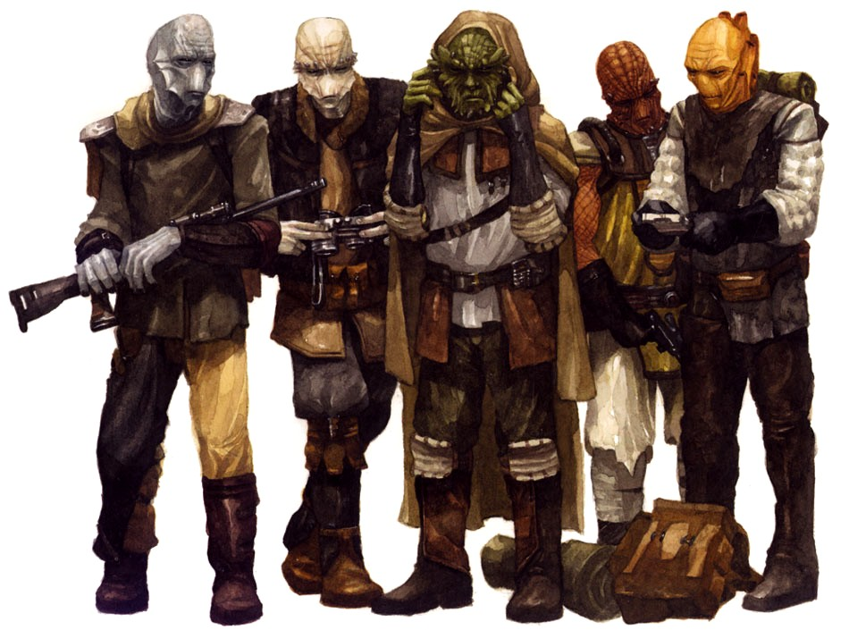

Nikto
nikto
Kajain'sa'Niktos (Red Niktos)
Having evolved in the blasted expanse of the Endless Wastes, Red Niktos are adapted for this arid environment. The most common Nikto subspecies, Kajain’sa’Niktos have ruddy skin ranging from light orange to red and sport small facial horns on the brow and chin. A Red Nikto’s nose is protected by a semipermeable membrane that prevents sand inhalation. Similar membranes cover the breathing tubes on either side of the neck to reduce water vapor loss. This allows a Red Nikto to survive up to a week without fresh water.
Special Abilities: Kajain’sa’Niktos begin the game with one rank in Resilience. They still may not train Resilience above rank 2 during character creation. When making skill checks, Red Niktos may remove imposed due to arid or hot environmental conditions.
Kadas’sa’Niktos (Green Niktos)
Originating in the forests and temperate coastal regions of Kintan, the Kadas’sa’Niktos have scaly green skin and a fringe of bony ridges terminating in small horns around the eyes and chin. Kadas’sa’Niktos have visible, highly sensitive noses and long claws for climbing.
Special Abilities: Kadas’sa’Niktos begin the game with one rank in Coordination. They still may not train Coordination above rank 2 during character creation. They also gain to Athletics checks made to climb trees and other surfaces their claws can pierce.
Claws: When a Green Nikto makes Brawl checks to deal damage to an opponent, he deals +1 damage and has a Critical Rating of 5.
Esral’sa’Niktos (Mountain Niktos)
The bluish-gray Esral’sa’Niktos, or Mountain Niktos, evolved in the mountainous hinterlands of Kintan. Prominent facial fins protrude from their cheeks, providing them with excellent hearing and assisting with heat regulation, both of which provide an edge in the wilds.
Special Abilities: Esral’sa’Niktos begin the game with one rank in Survival. They still may not train Survival above rank 2 during character creation. They also gain the Natural Outdoorsman talent .
Gluss’sa’Niktos (Pale Niktos)
Native to the rocky Gluss’elta Islands of their homeworld, Gluss’sa’Niktos, or Pale Niktos, have whitegray skin, tiny horns around their eyes, and small facial fins. Evolving near the oceans of Kintan, the Pale Niktos are born sailors and swimmers, possessing slightly webbed fingers and toes to help propel them through the water.
Special Abilities: Gluss’sa’Niktos begin the game with one rank in Athletics. They still may not train Athletics above rank 2 during character creation.
Swimmer: A Pale Nikto never suffers movement penalties for traveling through water and can hold his breath for a number of rounds equal to twice his Brawn rating before beginning to drown.
M’shento’su’Niktos (Southern Niktos)
The Southern Niktos have cream, white, yellow, or orange skin and lack the horns and prominent facial ridges common to other Niktos. Instead, the M’shento’su’Niktos have evolved long, well-developed breathing tubes on the backs of their necks. In addition to facilitating respiration, the tubes allow the Southern Niktos to perceive ultrasonic vibrations.
Special Abilities: : M’shento’su’Niktos begin the game with one rank in Perception. They still may not train Perception above rank 2 during character creation. Southern Niktos may add to Perception and Vigilance checks to detect sounds.
Perhaps the most well-known slaves of the Hutts, the fierce and humorless Niktos of Kintan have served their masters for thousands of years, though not always with unwavering loyalty. Hardy and stoic, the five Nikto subspecies are a common sight throughout Hutt Space and the Outer Rim Territories.
Reptilian humanoids with tough, leathery skin and standing roughly the height of an average human, the Niktos are a product of their harsh environment. Bombarded for thousands of years by gamma radiation from a nearby magnetar star known as M’dweshuu, life on Kintan has had to adapt rapidly or face extinction. The frequency of mutation among the Niktos has sped up their evolution, altering their genome thousands of times faster than would otherwise be the case. The Niktos are capable of only very limited facial expression due to their lack of welldeveloped mimetic musculature, and their eyes are protected by a thin, transparent membrane. Their seemingly blank expressions and unblinking stares often cause others to underestimate their intelligence.
Nikto civilization grew from necessity. Banding together to survive against their homeworld’s fearsome, mutated predators—vicious spine dragons, enormous trogwhales, and ferocious tuskbeasts among them—the Niktos learned the value of cooperation as they worked together to tame and conquer their harsh world. Though racial tensions between the various subspecies of Niktos resulted in several bloody, planetwide wars prior to the Treaty of Vontor, the Hutts imposed a unified peace on the Niktos. While there are certain long-standing taboos against interbreeding among the subspecies, children are occasionally born of mixed parentage. Most offspring of such couplings display only the characteristics of one parent or the other; relatively few genuine hybrids are born.
Life for most Niktos is harsh, in spite of the “beneficence” of the Hutts, and they toil hard in the service of their callous and cruel masters. Few Niktos are natural leaders, and servitude is simply a way of life—relatively few aspire to anything more than bondage to a Hutt who has fewer sadistic tendencies than a Dark Lord of the Sith. Even so, there is an undercurrent of yearning for freedom among the Niktos that has not been entirely extinguished by millennia of slavery. Occasionally a Nikto will escape his master or purchase his freedom, but such an emancipated slave must remain evervigilant lest he fall into the clutches of another Hutt.
The Niktos evolved on Kintan, a planet in the Si’klaata Cluster. It is a world of varied climates and environments, from vast deserts and dry tundra to forested mountains and tropical archipelagoes. The unifying factor on Kintan is M’dweshuu and its radiation, which permeates the whole planet, causing strange mutations among the ecosystems. While the radiation levels are not lethal (at least not immediately), Kintan is still a dangerous, violent world.
Unlike the Klatooinians and Vodrans, the Niktos have not abandoned their own language. Most Niktos are able to speak their native tongue, as well as Huttese. Many Niktos are also able to speak at least some Basic, though the limited articulation of their mouths can make them somewhat difficult to understand.
Due to their relationship with the Hutts, most Niktos operate in the gray area between illegal and immoral, generally doing the dirty work their masters prefer not to. While many Niktos serve as bodyguards or enforcers for the Hutts, others function as pilots, mechanics, or technicians. A Nikto’s starting Obligation is usually owed to a Hutt, whether it is a Duty to a particular kajidic, a Debt owed for the Nikto’s freedom, or a Bounty on his head for escaping.
T he harsh conditions of the Nikto homeworld has contributed to the development of five distinct Nikto subspecies, which have diverged due to geographic isolation from each other and adaptation to their various environments. While the different subspecies display a variety of cosmetic and minor physiological differences, they are all genetically compatible.